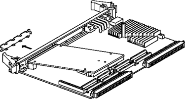
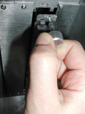
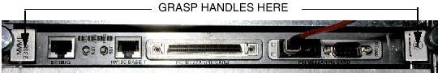
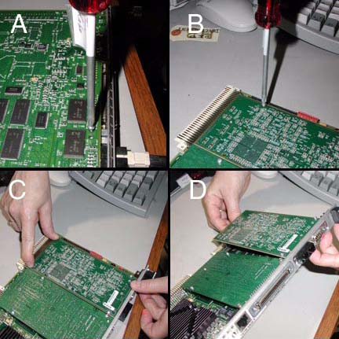

Operating Documentation
Direction 5114043-800, Rev# 9
LightSpeed 3.X Service Methods (Advanced)
Operating Documentation |
| Required Persons | Preliminary Reqs | Procedure | Finalization |
|---|---|---|---|
| 1 |
The DIP is mounted on top of RIP board, which is located in the VME (ICE Box) chassis of the console. It necessary to remove the RIP board to replace the DIP Board.
Illustration 1: DIP Board Installation

| The DIP board is a static sensitive device. Good ESD practices should be followed. | |
Shutdown application and operating system software.
Power down the console using the power switch located on the front cover.
| POTENTIAL FOR PERSONAL INJURY OR DEATH BY ELECTRIC SHOCK. | |
| POTENTIALLY LETHAL VOLTAGES ARE PRESENT IN THE OPERATOR'S CONSOLE. | |
| TO AVOID RISK OF ELECTRIC SHOCK, FOLLOW PROPER LOCKOUT/TAGOUT PROCEDURES. |
Tag and lockout the main system power, at the main disconnect.
Using a 4mm hex wrench, release the cover latches and remove the console front cover.
Remove the front EMC cover from the ICE box.
Remove the cables connected to RIP board.
Disconnect the optical cable from the port optical connector labeled RX. This is the cable that brings DAS data into the DIP.
Loosen the thumb screws (knurl nuts) so that the RIP card can be removed.
Illustration 2: RIP Board Thumb Screws

Gently but firmly, grasp the RIP board by it handles and pull it loose and towards you.
Illustration 3: RIP Board Handles

Immediately place the RIP board in a anti-static bag or onto a static free work surface.
To remove the DIP from the RIP Board, do the following: (It’s not necessary to remove any standoffs from the RIP to remove the DIP Board.)
On the bottom of the RIP board assembly, remove the two (2) screws nearest the face plate that attach the DIP to the RIP. These screws thread into the DIP board’s edge connectors. See Illustration 4, A.
Illustration 4: DIP Board Removal and Installation

On the top side of the RIP board, remove the two (2) screws nearest the edge connector retaining the DIP. It’s not necessary to remove the stand-offs. See Illustration 4, B.
Gently pull the DIP and RIP board apart, where they are attached by the PCI/PMC edge connector. See Illustration 4, C.
Lift the DIP board out. Illustration 4, D. Place into a anti-static bag immediately.
To install a DIP board, do the following:
Rotate the DIP into position and gently but firmly press down on the PCI/PMC edge connector to seat. See Illustration 4, D then C.
Re-install all of the removed screws. See Illustration 4, B then A.
Gently but firmly, re-install the RIP board assembly into its VME card cage slot and secure with thumb screws.
Attach cables to RIP, SCSI and DIP boards and reassemble console.
Remove lockouts and power up console.
No finalization required.